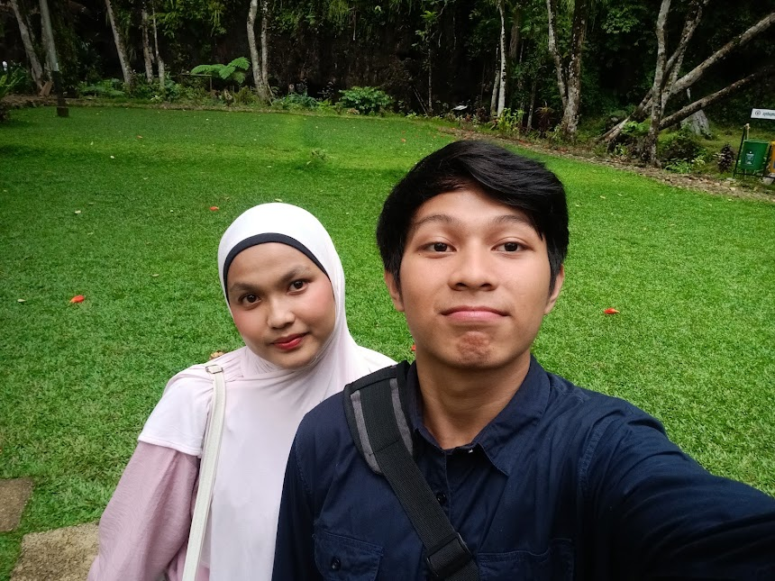
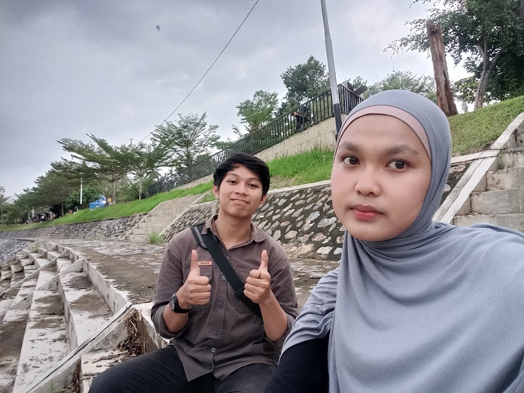

Bukan cuma soal api kecil itu.
Seratus streak mungkin terlihat sederhana. Isinya pun hal-hal kecil: saling mengirim video, kadang video kucing yang random, kadang sesuatu yang bikin senyum sebentar di tengah hari yang sibuk. Buatku, hal sederhana seperti itu cukup menyenangkan untuk dirayakan.
Halaman ini bukan permintaan atau harapan yang harus kamu balas. Aku cuma ingin merayakan momen kecil ini dengan cara yang sedikit berbeda. Semoga kamu bisa menikmatinya sebagai hadiah sederhana, tanpa beban apa pun.
Padang dan Payakumbuh.
Ada beberapa hari yang mungkin terasa biasa saat dijalani, tetapi tetap punya tempat kecil dalam ingatan. Aku memilih dua foto ini untuk mewakili momen yang menyenangkan.

foto/padang.jpg

foto/payakumbuh.jpg
Semoga Allah selalu memudahkan langkahmu.
Ada hal-hal baik yang kadang cukup disampaikan sebagai doa. Jadi, di halaman kecil ini aku ingin mendoakan beberapa hal baik untukmu.
Untuk hatimu
Semoga Allah memberi ketenangan di saat pikiran terasa penuh, melapangkan hati saat ada hal yang berat, dan menjaga kamu tetap kuat tanpa harus selalu terlihat kuat.
Untuk kuliah dan cita-cita
Semoga setiap usaha dan lelahmu dalam belajar diberi hasil yang baik. Semoga urusan akademik, organisasi, dan rencana masa depanmu dimudahkan satu per satu.
Untuk hari-harimu
Semoga kamu selalu dipertemukan dengan orang-orang yang tulus, lingkungan yang baik, dan hal-hal sederhana yang membuatmu tersenyum saat hari terasa panjang.
Untuk langkah ke depan
Semoga Allah menjaga kamu dalam setiap perjalanan, menuntun pilihanmu menuju kebaikan, dan menjadikan hal yang sedang kamu perjuangkan membawa manfaat serta keberkahan.
“Semoga apa pun yang sedang kamu usahakan, dalam diam maupun yang belum sempat kamu ceritakan kepada siapa pun, Allah mudahkan jalannya dan cukupkan kekuatanmu.”
Terima kasih untuk cerita yang pernah ada.
Terima kasih untuk momen, cerita, dan tawa yang pernah dibagikan. Aku menghargai semuanya sebagai bagian baik dari perjalanan kita. Aku juga menghargai ruang dan batasan yang kamu butuhkan, jadi halaman ini cukup menjadi ucapan kecil—tanpa perlu ada jawaban atau balasan khusus.